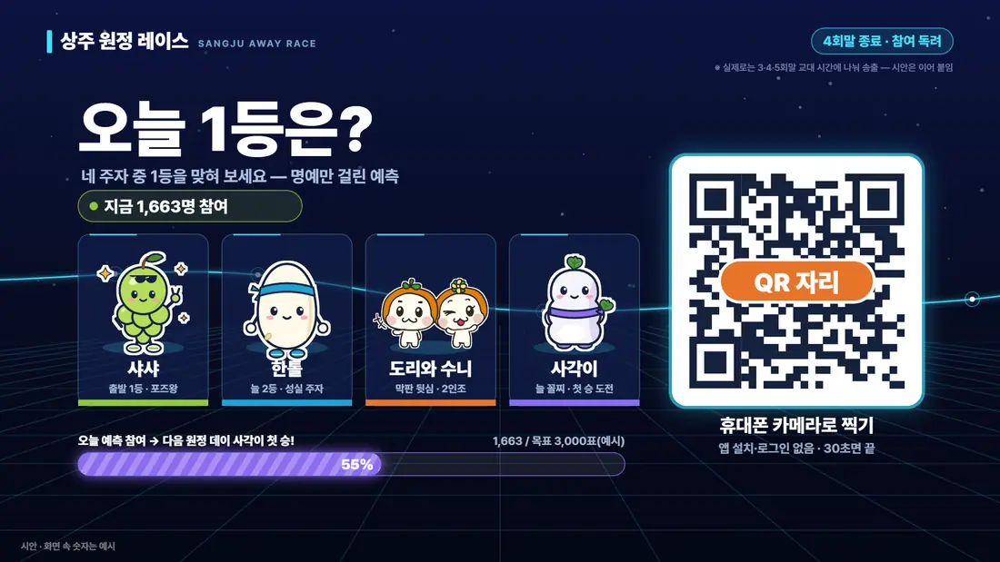
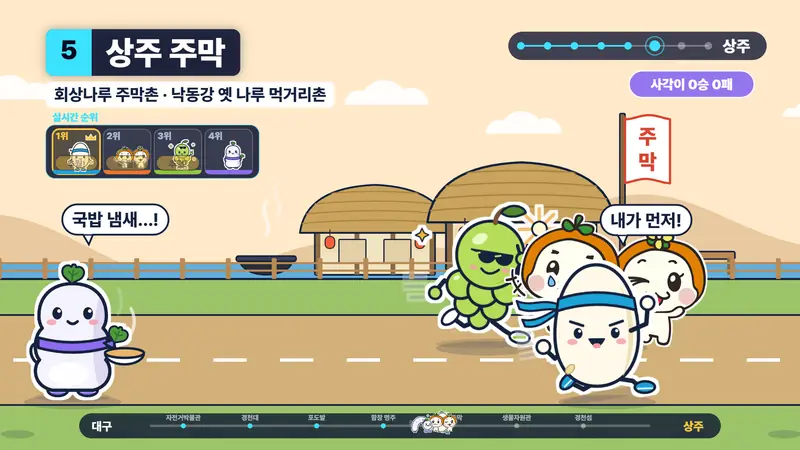
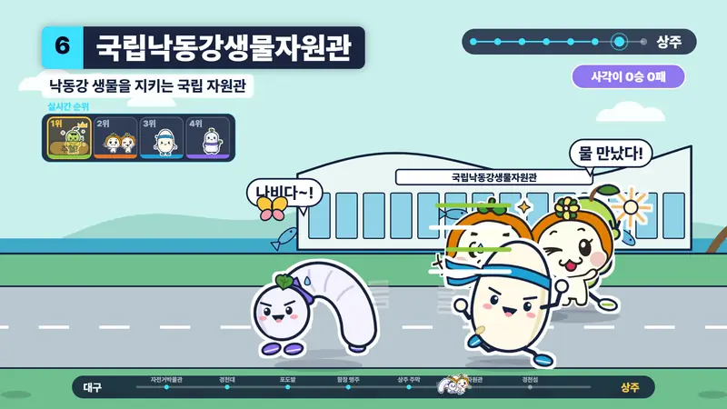
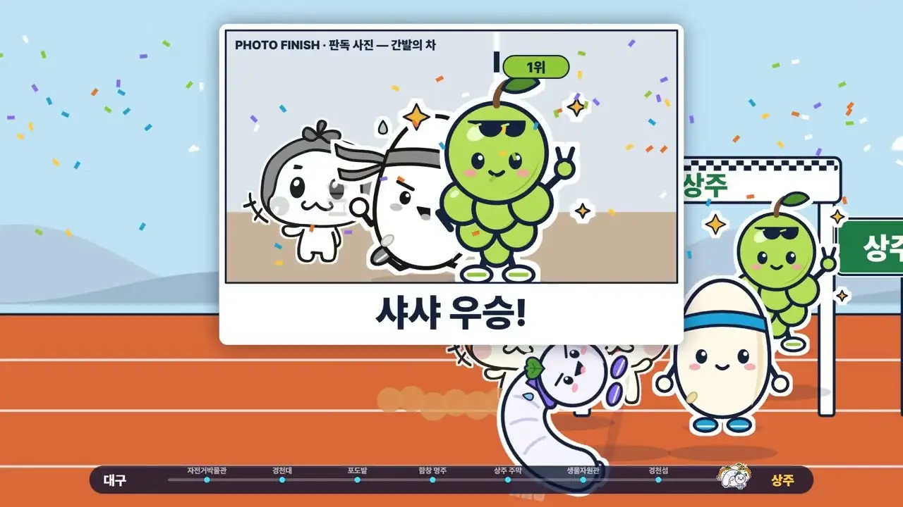
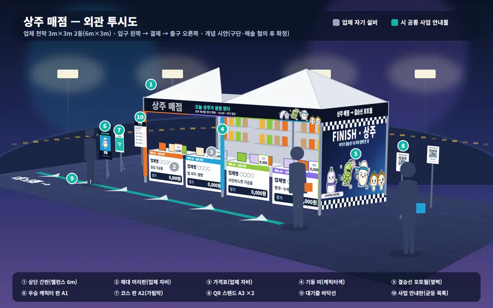
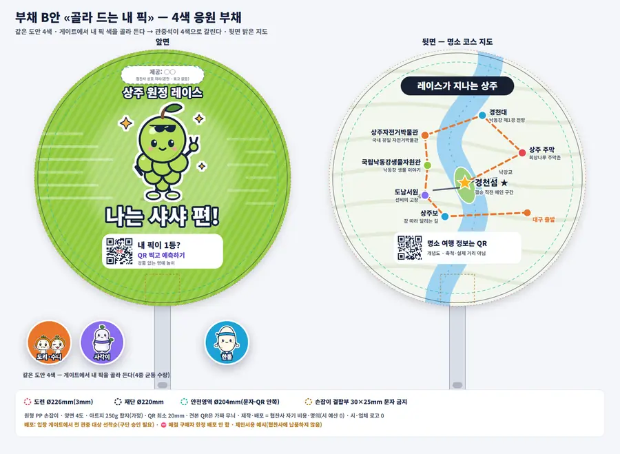
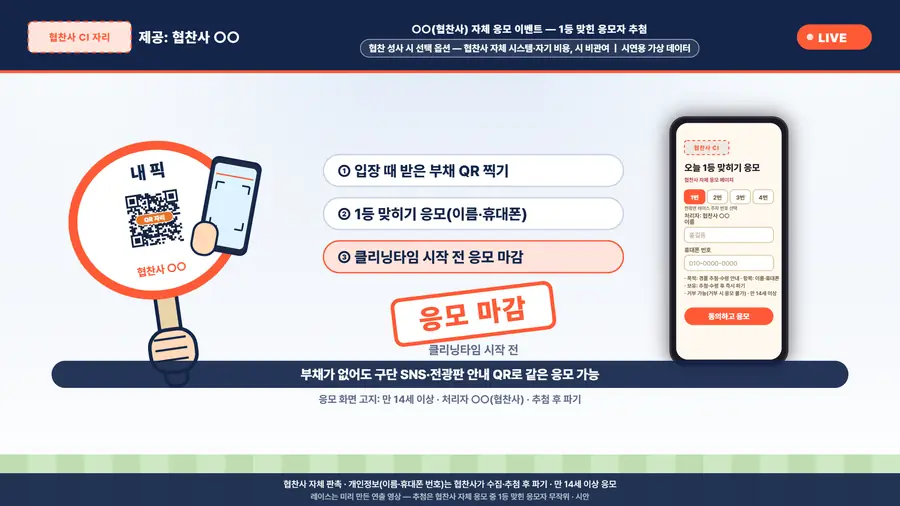
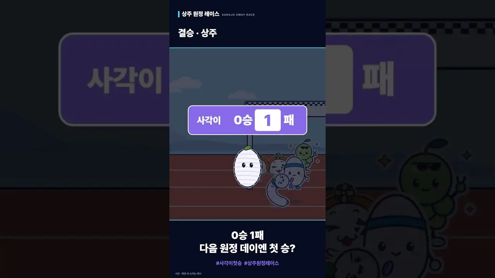

누에 «사각이»는 아직 0승
레이스가 끝나면 숏폼으로 «첫 승 목표»를 공개합니다(1회차 실제 참여 수로 계산).
대구 야구장 쉬는 시간, 상주 캐릭터들이 상주까지 달리고 관중은 QR로 1등을 맞힌다
이 쉬는 시간이 «클리닝타임»입니다.
상주 캐릭터 4종이 대구를 출발해 상주 명소를 지나고, 마지막은 경천섬. 결승선은 «상주»입니다.

상주 명소를 지나 마지막은 늘 경천섬, 결승선은 «상주».


도리와 수니는 상주시 캐릭터 그대로, 샤샤·한톨·사각이는 상주 특산에서 착안한 새 캐릭터입니다.

시연 영상 속 추첨은 협찬 성사 시 선택 옵션(시연용 가상 데이터) — 시 예측 시스템은 경품 없음
3~5회말 사이 10초면 끝. 가입도, 상품도 없이 맞히는 재미와 명예만.
레이스가 끝나면 숏폼으로 «첫 승 목표»를 공개합니다(1회차 실제 참여 수로 계산).
게이지가 목표에 닿으면 사각이 첫 승. 못 닿으면 미리 봉인한 다른 결말이 나가고, 도전은 다음 해로.
야구장 팝업스토어는 경기 날 구장 광장·게이트 앞에 하루만 여는 임시 매장입니다. 관중은 입장 전과 퇴장길에 들릅니다.

입점 업체 자기 설비 · 개별 포장 완제품 정가 판매 · 시는 공통 사업 안내판(위치·운영시간·업체 균등 목록)만
구장 안에서 보고, 숏폼으로 구장 밖까지.
2026 프로야구 관중 역대 최다 경신(머니투데이 2026). 추정치는 결산 때 실제 수치로 공개합니다.
회당 약 1,405만 원. 모든 금액은 추정이며 구단 견적으로 확정합니다.
1년차에 전광판에 맞춘 영상을 다시 쓰고, 횟수(3회 가정)는 1년차 성과 보고 뒤 정합니다.
3년 8회 누계 약 6,534만 원65,335천원 · 추정
추경이 성립하기 전에는 계약하지 않고, 협의가 안 되면 그 단계에서 멈춥니다.
당일 일정은 잠정안이며, 구단 소관 항목은 모두 구단 협의 후 확정합니다.
관문마다 안 되면 그 단계에서 멈춥니다. 1년차는 보류하고 다른 경기·구단을 찾습니다. 모든 일정은 구단 협의 후 확정.
공개 보도 기준. 선례에서는 노출 방식만 참고하고, 경품·할인·무료 배포는 하지 않습니다.
원정 데이 현장 21명(구단 제외) — 시 2(총괄·안전 연락, 촬영) · 용역 4(설치 2, 안내 2) · 입점 업체 8 · 협찬사 7(배포 4, 수령 2, 반장 1, 추정) + 원격 예측 운영자·응모 운영자 · 구단 MC·오퍼레이터·안전요원
구단 협의 후 확정할 것
협찬 이벤트(성사 시 선택): 협찬사 명의·자기 비용·자체 시스템으로 응모자 전체를 대상으로 협찬사 상품 추첨(건당 5만 원 이하, 정보는 협찬사가 최소 수집·사후 파기), 레이스 예측 결과와 무관·시 예측 시스템과 분리·시 비관여
| ① 예측 QR · 시 사업 | ② 응모 QR · 협찬사 | |
|---|---|---|
| 운영 | 시 용역 | 협찬사(처리자 명칭·연락처를 첫 화면에) |
| 보상 | 없음 — 명예(닉네임)만 | 협찬사 경품(건당 5만 원 이하, 협찬사 비용·명의) |
| 어디서 | 전광판 예측 장면(3~5회말) | 부채 뒷면 · 구단 SNS · 전광판 «제공: ○○» 슬레이트 |
| 연동 | 추첨·부채 색과 연동 0 | 예측 결과·부채 색과 연동 0 |
| 전광판 | 레이스 화면 안 | 슬레이트 2~3초로 분리(분할 화면 금지) |
| 개인정보 | 이름·전화번호 받지 않음(기기당 1회 픽) | 응모 땐 일회용 코드만, 이름·연락처는 당첨 후에만(만 14세 이상) |
협찬 부채 B안 «골라 드는 내 픽» — 같은 도안 캐릭터 4색, 입장 게이트에서 관중이 자기 픽 색 선택(전 관중 선착순·구단 승인), 뒷면 명소 지도 공통, «제공: ○○»


법률 자문이 아닌 제안 단계의 검토입니다. 시행 전 관계 부서·기관 협의로 확정합니다.

타 시군은 비용·성과를 공개하지 않습니다. 레이스 영상은 이미 만든 시안을 전광판에 맞춰 쓰므로 영상 관련 비용이 전면 제작 약 1,400만 원에서 약 810만 원으로 줄고, 2·3년차는 그 영상을 다시 써서 각 약 1,862만 원(3회 가정, 성과 보고 후 결정)입니다. 시가 주는 경품·무료 배포가 없어 감사 시비도 없습니다.
채택 뒤 의향 확인 → 견적 → 추경 순서이고, 추경 성립 전에는 계약하지 않습니다. 단축 75초판도 준비하며, 안 되면 광고료를 집행하지 않습니다.
처음부터 «연출 레이스»라고 알립니다. 결말 파일의 지문을 예측 전에 공개하고 경기 뒤 누구나 대조할 수 있게 합니다. 첫 승 목표도 1회차 실참여로 계산해 미리 공개하고, 사람이 고르는 순간이 없습니다.
미리 난수로 정해 봉인한 패배 영상이 나갑니다. «사각이 2년차 재도전»으로 이야기가 이어집니다.
시 예측에는 상품·금품이 없고 명예(닉네임)뿐입니다. 이름·전화번호를 받지 않으며 실제 경기 결과를 맞히는 것이 아닙니다. 선거 구간에는 열지 않습니다.
그 추첨은 협찬이 성사될 때만 여는 «협찬사 자체 이벤트»입니다. 응모자 전체를 대상으로 협찬사 명의·비용·시스템으로 추첨하며, 레이스 예측 결과와는 연결되지 않습니다. 시는 관여하지 않습니다.
기존 인력은 약 14인일입니다. 영상·예측 페이지는 용역이 만들고, 매점은 입점 업체가 운영합니다. 협업 분담은 협의 후 확정합니다.
같은 시즌의 대체 홈경기로 넘기는 조건을 계약에 넣습니다. 그것도 안 되면 그 회차는 열지 않고 광고료도 쓰지 않습니다.